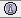
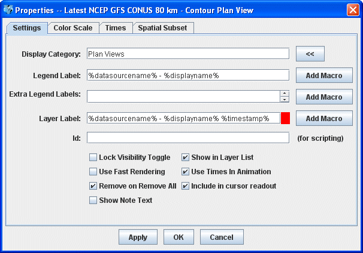
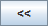
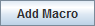

Properties Dialog
The Properties dialog is accessed by right clicking on a layer in the Legend of the Main Display window, and selecting Edit->Properties menu item. This dialog can also be accessed in the Layer Controls tab of the Data Explorer, by clicking the  button at the bottom of the tab. The Properties dialog consists of a Settings tab, and possibly others depending on item being displayed:

Image 1: Layer Control Properties DialogProperties
- Display Category - Organizes the Legend by moving items from one Legend category to another. The  button shows a list of all of the current display categories and allows you to easily set this field.
- Legend Label - Represents the label used in the Legend of this display control. It can contain arbitrary text as well as a set of macros. These macros can also be used in the Extra Legend Labels and Layer Label fields. The macros can be added to the label with the  button:
- Display Name %displayname% - Shows name of the display.
- Field Short Name %shortname% - Shows the short name of the parameter being displayed.
- Field Long Name %longname%- Shows the long name of the parameter being displayed.
- Data Source Name %datasourcename% - Shows the name of the data source that produced the parameter being displayed.
- Display Unit %displayunit% - Shows the unit of the parameter used in the display.
- Time Stamp %timestamp% - Shows the time of the data that is currently being displayed using the default time format preference. You can also use a macro of the form %time:<time pattern>% to set a specific time format other than the default. <time pattern> follows the same rules defined in the User Preferences' Formats & Data tab. For example, %time:HHz EEE dd MMM yyyy% would show something like 12GMT Fri 16 Feb 2007.
- Forecast Hour %fhour% - Lists the forecast hour being displayed. This is used with gridded data. The output is a numerical value for the forecast hour followed by an 'H' for 'hour'.
- Forecast Hour (value only) %fhour2% - Lists the forecast hour being displayed. This is used with gridded data. The output is a numerical value for the forecast hour without an 'H' (as used with %fhour%).
- Resolution %resolution% - Lists any data sampling applied to the display. This is only used with adaptive resolution.
- Level %level% - Lists the vertical level being displayed.
- Use as default for this type of display - Sets the Legend Label to default to what is entered in the text field for all displays created with the display type used to create the layer.
- Use as default for all displays with data - Sets the Legend Label to default to what is entered in the text field for everything that displays in the Main Display window.
- Use as default for all displays without data - Sets the Legend Label to default to what is entered in the text field for all displays without data. Example displays without data include Drawing Controls and Location Controls.
- Extra Legend Labels - Acts like the Legend Label field (e.g., with macros).
- Layer Label - Acts like the Legend Label field to define the text label that is shown in the display list. The colored rectangle to the right of the layer label changes the color. Left-click and use the pull down menu to specify a color or create a custom color.
- Id - Defines an ID for this display. The ID is used for accessing particular displays from the McIDAS-V Scripting Language. For example, this can be used with the display keyword for colorbar in the formatting of captureImage.
- There may be a variety of checkboxes:
- Lock Visibility Toggle - Locks/unlocks visibility toggling.
- Use Fast Rendering - Uses fast rendering to display data layers (images, contours, etc.); see Performance Tuning for more information. A separate fast rendering option for map layers is available in the Map Controls.
- Remove on Remove All - Removes the layer when the Remove all Layers or Remove all Layers and Data buttons are pressed. When this option is not selected, the layer will remain after removing all layers and data sources.
- Show Note Text - Adds a text field to the bottom of the Layer Controls tab of the Data Explorer for the item. This allows you to enter notes/text that can be saved in bundles.
- Show in Layer List - Allows for the toggling of the visibility of the label in the view window. Note that you must enable showing the list of display labels that are toggled on using the View->Properties dialog of the view window, or by setting the global property for all display through the User Preferences dialog.
- Include Times In Animation - Includes the item in the time animation.
- Include in cursor readout - Includes probe readout values for the parameter at the bottom of the Main Display window when you probe the data.
There may be other tabs shown, depending on the display. For example, the Color Scale tab allows for the configuration of where the color scale bar is shown. The Spatial Subset tab allows for defining further spatial subsetting of the data.